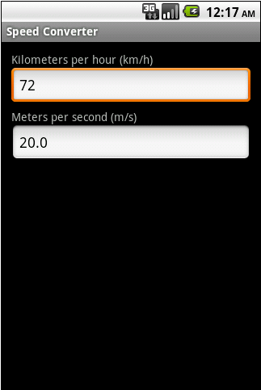

/* Моя кошка замечательно разбирается в программировании. Стоит мне объяснить проблему ей - и все становится ясно. */
John Robbins, Debugging Applications, Microsoft Press, 2000

/* Моя кошка замечательно разбирается в программировании. Стоит мне объяснить проблему ей - и все становится ясно. */
John Robbins, Debugging Applications, Microsoft Press, 2000
В компаниях при серьёзном подходе к разработке приложений обязательно используется тестирование при помощи специальных инструментов. В данной статье мы чуть затронем эту тему для первого знакомства.
Несколько уроков на заданную тему можно изучить в документации Гугла - Testing Your Android Activity.
На Хабре есть упрощённый вариант, который я скопирую сюда на всякий случай в сокращённом варианте и небольшими исправлениями ошибок.
Приложение будет переводить «километры в час» в «метры в секунду» и наоборот, а также выдавать сообщение Error!, если нужное значение не удается вычислить. Пользователь будет вводить данные о скорости в любой EditText и в другом получать результат.

<LinearLayout xmlns:android="http://schemas.android.com/apk/res/android"
xmlns:tools="http://schemas.android.com/tools"
android:layout_width="match_parent"
android:layout_height="match_parent"
android:orientation="vertical"
android:paddingBottom="@dimen/activity_vertical_margin"
android:paddingLeft="@dimen/activity_horizontal_margin"
android:paddingRight="@dimen/activity_horizontal_margin"
android:paddingTop="@dimen/activity_vertical_margin"
tools:context=".MainActivity" >
<TextView
android:id="@+id/textKmPerHour"
android:layout_width="wrap_content"
android:layout_height="wrap_content"
android:text="км/ч" />
<EditText
android:id="@+id/editKmPerHour"
android:layout_width="match_parent"
android:layout_height="wrap_content"
android:inputType="numberDecimal"
android:numeric="decimal" />
<TextView
android:id="@+id/textMetersPerSec"
android:layout_width="wrap_content"
android:layout_height="wrap_content"
android:paddingTop="4dp"
android:text="м/с" />
<EditText
android:id="@+id/editMetersPerSec"
android:layout_width="match_parent"
android:layout_height="wrap_content"
android:inputType="numberDecimal"
android:numeric="decimal" />
</LinearLayout>
Далее устанавливаем слушателей для текстовых полей и при вводе текста вычисляем скорость в других единицах. Нюанс, что onKey() не наступает при активной software клавиатуре мы учтем позже в тестах.
package ru.alexanderklimov.speed;
import ...
public class MainActivity extends Activity {
public void onCreate(Bundle savedInstanceState) {
super.onCreate(savedInstanceState);
setContentView(R.layout.activity_main);
final EditText editKmPerHour = (EditText) findViewById(R.id.editKmPerHour);
final EditText editMeterPerSec = (EditText) findViewById(R.id.editMetersPerSec);
// setup listener for Kilometers per hour EditText
editKmPerHour.setOnKeyListener(new OnKeyListener() {
public boolean onKey(View v, int keyCode, KeyEvent event) {
if (event.getAction() == KeyEvent.ACTION_UP) {
try {
double kmPerHour = Double.parseDouble(editKmPerHour
.getText().toString());
double meterPerSec = kmPerHour * 0.2777777777777778;
editMeterPerSec.setText(Double.valueOf(meterPerSec)
.toString());
} catch (NumberFormatException e) {
editMeterPerSec.setText(R.string.errorMsg);
Log.d("Test", "e:" + e);
}
return true;
}
return false;
}
});
// setup listener for Meters per second EditText
editMeterPerSec.setOnKeyListener(new OnKeyListener() {
public boolean onKey(View v, int keyCode, KeyEvent event) {
if (event.getAction() == KeyEvent.ACTION_UP) {
try {
double meterPerSec = Double.parseDouble(editMeterPerSec
.getText().toString());
double kmPerHour = meterPerSec * 3.6;
editKmPerHour.setText(Double.valueOf(kmPerHour)
.toString());
} catch (NumberFormatException e) {
editKmPerHour.setText(R.string.errorMsg);
Log.d("Test", "e:" + e);
}
return true;
}
return false;
}
});
}
}
Само приложение готово. Теперь необходимо создать тест для созданного приложения. Наверняка, при создании обычных проектов вы обращали внимание на пункт меню File | New | Project... | Android Test Project. Воспользуйтесь им. Появится окно мастера создания проекта. Трудностей быть не должно. Обычно для имени нового проекта используют связку из названия вашего подопытного проекта и слова Test, например, ваш проект носит название HelloKitty и тогда для теста нужен проект HelloKittyTest. Мастер предложит выбрать существующий проект из списка, далее нажимаем кнопку Finish и у вас появится новый проект без классов.
Для теста нужно создать новый класс, который наследуется от класса ActivityInstrumentationTestCase2.
Данный класс спроектирован для тестирования активностей в приложении. Он может создавать активность (используя InstrumentationTestCase.launchActivity()), запускать тесты в UI-потоке и позволяет посылать нам различные намерения в нашу активность.
Добавим конструктор, который будет использоваться тестирующим фреймворком. В качестве параметров мы покажем какое приложение будет тестироваться. В статье на Хабре используется устаревший способ. Для конструктора используйте следующий код:
public MainActivityTest() {
super(MainActivity.class);
}
Кстати, Eclipse предлагает сгенерировать конструктор с параметрами, но при их использовании тесты на эмуляторе не запускаются, хотя отрабатывают, но на экране ничего не происходит.
Далее в классе прописывается метод setUp(), который вызывается перед запуском тестов, будем инициализировать в нем переменные.
После этого можно добавлять тесты, они будут простыми дабы показать как взаимодействовать с UI, первый (testControlsCreated()) будет проверять — создалась и запустилась ли наша активность, а также имеем ли мы доступ к нашим компонентам.
testControlsVisible() - Используя метод assertOnScreen() из ViewAsserts проверяем видны ли наши компоненты.
testStartingEmpty() - Запускается ли приложение с пустыми EditText.
Добавим тест, проверяющий правильность перевода км/с в м/с. В нем мы используем TouchUtils.tapView(..) который симулирует касание по нужному нам компоненту а KeyEvent.KEYCODE_BACK убирает software клавиатуру. Метод testConvertMsToKmh() выглядит аналогично.
Последний тест проверяет (testGetError()) — получаем ли мы сообщение об ошибке.
package ru.alexanderklimov.test.test;
import ru.alexanderklimov.test.MainActivity;
import android.test.ActivityInstrumentationTestCase2;
import android.test.TouchUtils;
import android.test.ViewAsserts;
import android.view.KeyEvent;
import android.widget.EditText;
public class MainActivityTest extends ActivityInstrumentationTestCase2 {
public MainActivityTest() {
super(MainActivity.class);
}
private EditText editKmPerHour;
private EditText editMeterPerSec;
private MainActivity activity;
@Override
protected void setUp() throws Exception {
// TODO Auto-generated method stub
super.setUp();
activity = getActivity();
editKmPerHour = (EditText) activity
.findViewById(ru.alexanderklimov.test.R.id.editKmPerHour);
editMeterPerSec = (EditText) activity
.findViewById(ru.alexanderklimov.test.R.id.editMetersPerSec);
}
public void testControlsCreated() {
assertNotNull(activity);
assertNotNull(editKmPerHour);
assertNotNull(editMeterPerSec);
}
public void testControlsVisible() {
ViewAsserts
.assertOnScreen(editKmPerHour.getRootView(), editMeterPerSec);
ViewAsserts
.assertOnScreen(editMeterPerSec.getRootView(), editKmPerHour);
}
public void testStartingEmpty() {
assertEquals("editKmPerHour is not empty", "", editKmPerHour.getText()
.toString());
assertEquals("editMeterPerSec is not empty", "", editMeterPerSec
.getText().toString());
}
public void testConvertKmhToMs() {
TouchUtils.tapView(this, editKmPerHour);
sendKeys(KeyEvent.KEYCODE_BACK, KeyEvent.KEYCODE_1, KeyEvent.KEYCODE_0,
KeyEvent.KEYCODE_0);
double meterPerSec;
try {
meterPerSec = Double.parseDouble(editMeterPerSec.getText()
.toString());
} catch (Exception e) {
meterPerSec = -1;
}
assertTrue("100 km/h is not 27.778 m/s", meterPerSec > 27.7
&& meterPerSec < 27.8);
}
public void testConvertMsToKmh() {
TouchUtils.tapView(this, editMeterPerSec);
sendKeys(KeyEvent.KEYCODE_BACK, KeyEvent.KEYCODE_1, KeyEvent.KEYCODE_5);
double meterPerSec;
try {
meterPerSec = Double
.parseDouble(editKmPerHour.getText().toString());
} catch (Exception e) {
meterPerSec = -1;
}
assertTrue("15 m/s is not 54 km/h", meterPerSec == 54);
}
public void testGetError() {
TouchUtils.tapView(this, editKmPerHour);
sendKeys(KeyEvent.KEYCODE_1, KeyEvent.KEYCODE_DEL);
assertEquals("Must be Error!", "Error", editMeterPerSec.getText()
.toString());
}
}
Несколько пояснений к статье. Объекты, представляющие активность, поля для ввода текста и кнопку и прочие компоненты следует сделать закрытыми полями (private). Далее активность нужно инициализировать через метод getActivity(), а уже через него получить доступ к компонентам.
Метод assertNotNull() проверяет, создались ли элементы интерфейса. А также проверяются другие ситуации.
Запустим наше тестовое приложение: Run As | Android JUnit Test. В статье из хабре есть видеоролик, как это выглядит. Кратко, запустится ваше приложение и начнутся обрабатываться по очереди все методы, которые вы прописали в тестах, в автоматическом режиме. Далее вы можете проанализировать сообщения.
Возможности фреймворка android.test намного шире. Например, класс ActivityUnitTestCase в отличие от ActivityInstrumentationTestCase2 позволяет тестировать активность изолированно, используя Context или Application.
Существует также специальное расширение для ActivityInstrumentationTestCase2 в виде библиотеки Robotium. Небольшой пример использования можно найти на этой странице.